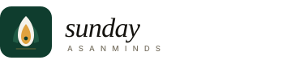
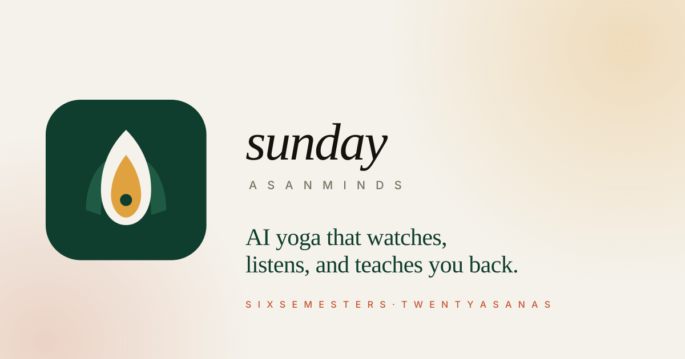

An upright lotus petal cradling a saffron flame, on the forest tile. The petal is yoga and growth. The flame is the awakened mind. The bindu is stillness. Designed to read at favicon size and scale to billboards.
Use this version everywhere by default. It works on cream, white, and most photo backgrounds.
Mark + wordmark. Use this in topbars, email headers, and presentation title cards.

Topbar mockups — both cream and forest variants.
The favicon is a simplified lockup so it survives the 16×16 pixel grid. Side leaves and mat hairline removed; the petal and flame remain.
Single-colour fallbacks for print, embroidery, dark mode, and email signatures.

Mono · cream on forest1200×630 social-share image. WhatsApp, LinkedIn, Twitter, iMessage all use this when someone pastes an AsanMinds link.

The brand lives in five anchor colours. Cream paper holds it together; forest gives it weight; saffron is the brand's eye-light.
logo.svg — primary mark, full colour, 64×64
logo-horizontal.svg — mark + wordmark, 380×80
favicon.svg — simplified mark, optimised for 16–32px
logo-mono-dark.svg — forest on light
logo-mono-light.svg — cream on dark
og-card.svg — social share card, 1200×630